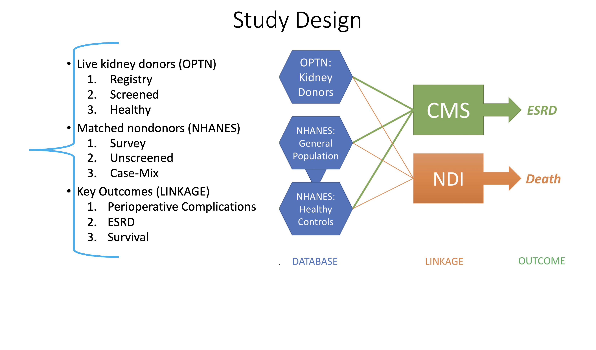

BACKGROUND#
Quantify nephrectomy-attributable risk of ESRD and mortality#
Describe the prevalence of hospitalizations in older donors vs. older nondonors#
Implement a risk calculator for ESRD, mortality, and sentinel hospitalization in older donors#
METHODS#

\(1-e^{-\int h_0(t)exp(X\beta)}\)#
Where:
\(h_0(t)\) is the nonparametric hazard for the base-case
\(exp(X\beta)\) is the maximum-likelihood estimate of the difference (on a log scale) between the hazard for the base-case and the hazard for the specific clinical scenario with explanatory variables \(X\)
\(t\) is the number of years of follow-up (tentatively 15y but will update to 30y later in January).
RESULTS#
Nondonors#
We describe a base-case below:
60y
White
Female
College Education
BMI \(24\ kg/m^2\)
SBP \(120\ mmHg\)
DBP \(75\ mmHg\)
eGFR \(90\ ml/min/1.73m^2\)
uACR 4 \(mg/g\)
Donors#
Missingness on key risk factors outlined above
uACR is 100% missing for donors
BMI, SBP, DBP, and eGFR conditionally missing (e.g. before 2005)
Only age, race, and sex are 0% missing throughout the study period
However, nondonor base-case informed by our prior beliefs about characteristics eligible donors
Thus, instead of detailing history, exam, and lab findings, we only outlined demographics:
Age
Race
Sex
CONCLUSIONS#
Will show that impact of donation on this base-case scenario is:
SBP \(+20\text{mmHg}\)
eGFR \(-30\text{ml/min}\)
This is the nephrectomy attributable risk
A webApp (online risk calculator) will allow a user to personalize the risk estimates
Our inferences have
face validity:Grams et al NEJM 2016 reports similar risk to ours using scenario 6 of Table 3
Donor followup studies report a 30% reduction in baseline eGFR after the 1st year of followup
Increased blood pressure is observed following nephrectomy